施工事例
甲府市
archive no.001
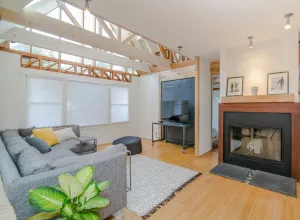
まるでフィンランドの暮らし
空き家リノベーション住宅 | 4LDK 平屋
Read more
甲府市
archive no.002
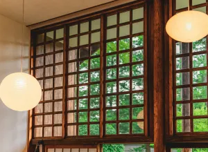
古民家の良さを残した、空間
空き家リノベーション住宅 | 6LDK 2階建て
Read more
南アルプス市
archive no.003
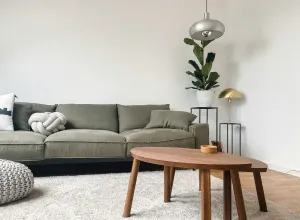
肌触りのよい暮らし
空き家リノベーション住宅 | 5LDK 平屋
Read more
大月市
archive no.004
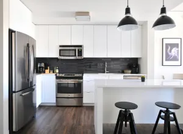
キッチンが中心の家
空き家リノベーション住宅 | 5DK 平屋
Read more
大月市
archive no.005
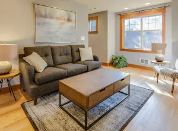
家族で育てる空間
空き家リノベーション住宅 | 6LDK 平屋
Read more
甲州市
archive no.006
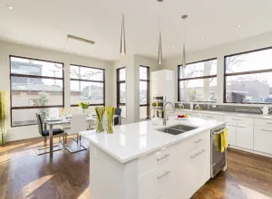
理想の田舎暮らし
空き家リノベーション住宅 | 5LDK 平屋
Read more
甲府市
archive no.007
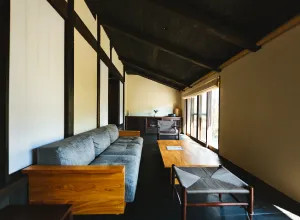
魅力が両立する暮らし
空き家リノベーション住宅 | 3LDK 平屋
Read more
富士吉田市
archive no.008
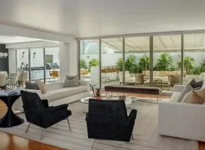
風と光を感じる
空き家リノベーション住宅 | 5LDK 2階建て
Read more
富士吉田市
archive no.009
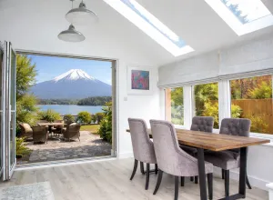
富士山と四季がある暮らし
空き家リノベーション住宅 | 5DK 平屋
Read more
富士河口湖市
archive no.010
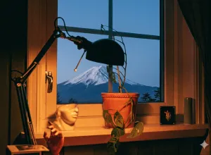
心地よい空間、心躍る毎日
空き家リノベーション住宅 | 5LDK 平屋
Read more
甲斐市
archive no.011
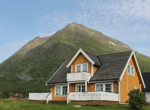
ちょうどいい田舎暮らし
空き家リノベーション住宅 | 6LDK 2階建て
Read more